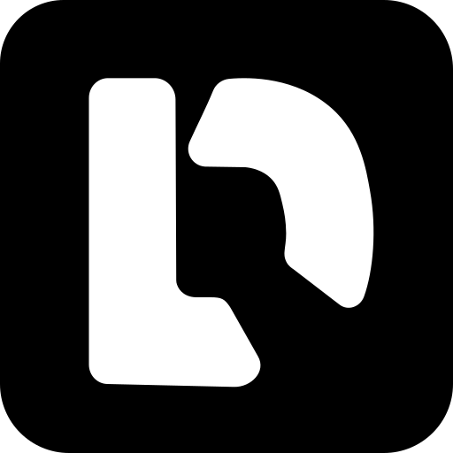

Wikis
Self-hosted alternatives to Notion, Confluence, Slab and GitBook.
What people say
- a team wiki
- document how we do things
- a knowledge base for customers
- leave Notion or Confluence
Why people self-host it
People leave Notion, Confluence, Slab, GitBook for it. Why, strongest first: cost, control, privacy.
Does it suit a machine of your own?
Good fit small and well suited
Questions that decide it
- for your team, or public?
How to publish it
- Usually
- org for a team wiki; none for a public knowledge base
- When the data is private or sensitive
- org
- When the data is regulated
- org, with the app's roles restricting confidential pages; keep client-identifying detail out of pages everyone can read
Who sees what inside it
books, spaces, or page roles decide who reads and edits what; set them before importing confidential material
The machine
little
For builders
a documentation or help centre for a product
Cards for it

docmostDocmost, a collaborative team wiki and Notion or Confluence alternative, behind your org loginpassed 2026-10-28, Edgible 1.4.29fit 4/5
Category from awesome-selfhosted.